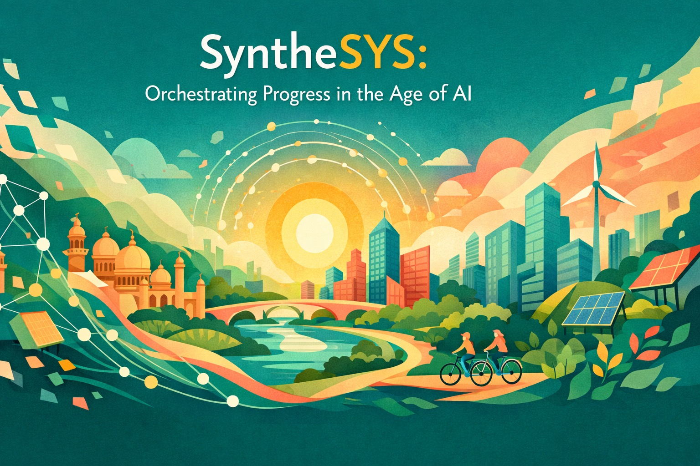

Prompt by claude, image by chatgpt
At Urban Morph, a few of us have been working across mobility, built form, energy, and waste through a singular lens: increasing the number of problem-solving people.
This philosophy has led us to become orchestrators for these sectors, bringing together concepts and solutions to shift the trajectory of change-making.
Along the way, we put our skin in the game. We began developing solutions around energy and mobility with WattsNext and Altmo. While we continue to orchestrate and build out the next generation of solutions from our venture studio, last year we started exploring how we could accelerate the development story, keeping in mind it cannot come at the cost of planetary resources.
The Year Knowledge Became Synthesisable
2025 was the year Large Language Models began to retain context and combine it with automation, fundamentally changing how technology and intelligence are consumed. We started collating information using AI and synthesising knowledge at multiple scales.
The Kalaburagi dashboard allowed us to visualise the state of affairs of a district lagging behind others. Our synthesis used the current reality while accounting for the region's strengths. It showed us something important: real progress happens when you make change at the margins of where people are today and build out the future; not helicopter in something that has no context for the people.
We dove deeper into cities and neighbourhoods with the NOTF platform, which surfaces the state of affairs at granular levels. Our AI-enabled municipal complaint management system consolidates retail complaints into aggregate projects that can be actioned, while intelligently routing them without constantly altering rules.
Another thing we realised from working the streets for many years: people do not know what's happening elsewhere in their neighbourhood, let alone on the other side of town. Newspapers have moved away from hyperlocal information towards sensationalist national and international stories. The NOTF Neighbourhoods platform allows citizen-based organisations to collaborate, reducing information asymmetry, tracking goals at the neighbourhood level, and telling their hyperlocal stories to everyone else.
Now we're building the thesis for the India Progress Monitor, a tool to help India achieve social foundations for all while respecting planetary boundaries. The goal isn't to throw good money after bad, but to utilise resources for greater effectiveness.
Human Intelligence Still Matters
What we've learnt in this journey is that while coding may be the first capability to be commoditised by AI, human intelligence still has the ability to steward automatons toward better outcomes for all. The sooner we embrace this role, the better off we'll be.
We haven't given up on the old-world charm of presenting stories that make us better human beings, more capable of taking care of this pale blue dot. The book Break the Block, documenting lessons from our change-making journey, was the first step. The second, on how AI can reduce our wastefulness and drive the next round of progress, is up next.
Introducing SyntheSYS
On the 77th year of the Republic that is Bharat, Urban Morph is ready to offer SyntheSYS: an offering to own our issues, understand them better, and channel action in a direction that gives us more bang for the buck.
SyntheSYS is in service of people, planet, and progress in the age of AI.